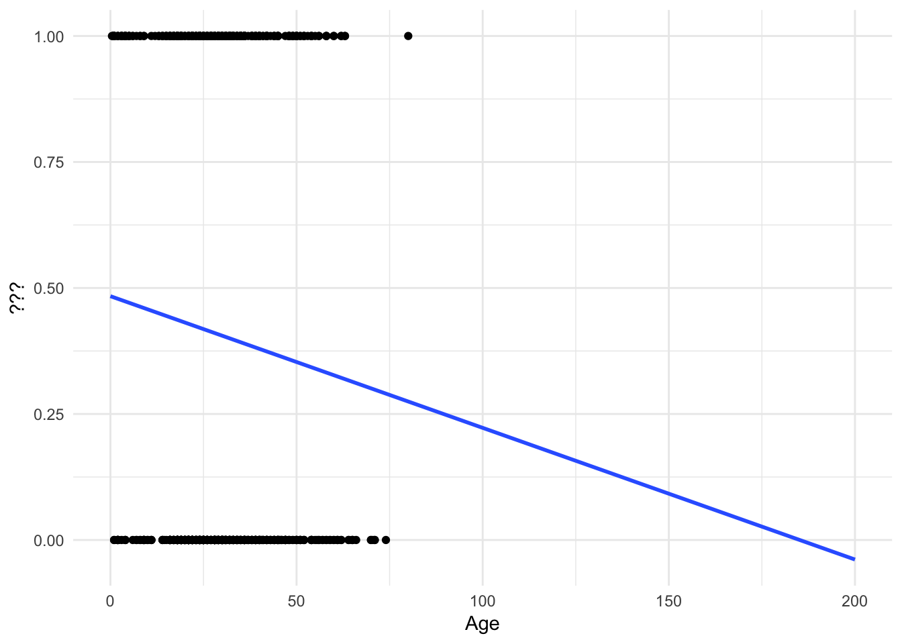
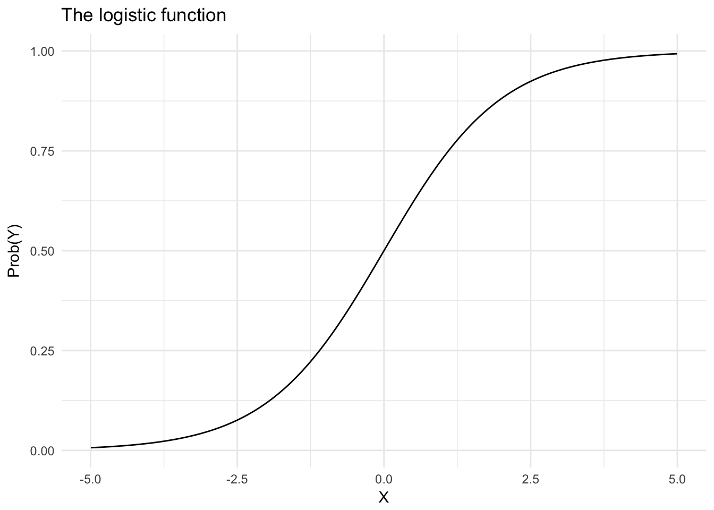
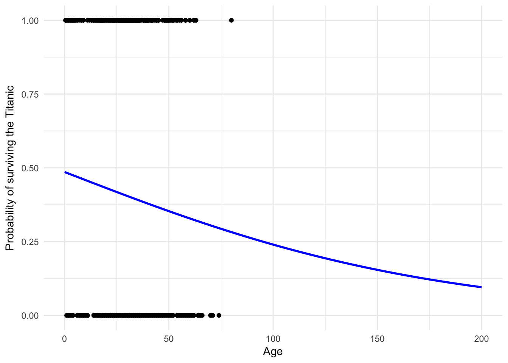
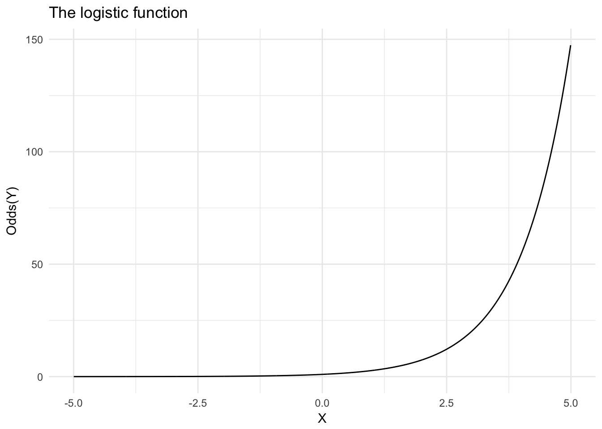
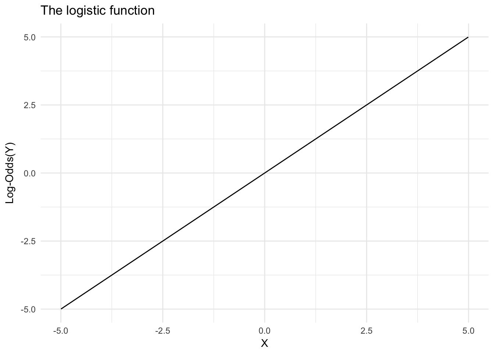
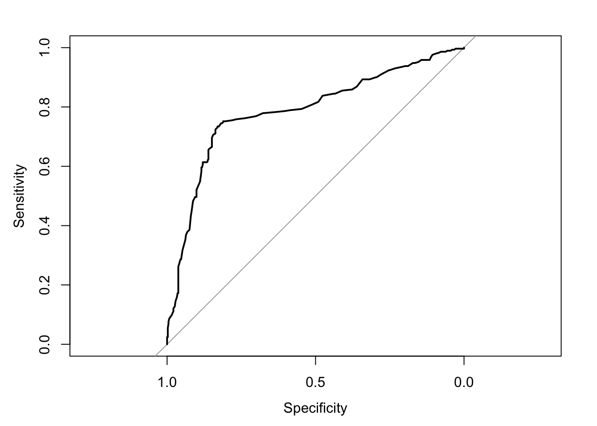

Statistical learning: logistic regression
MACS 30100 - Perspectives on Computational Modeling
Objectives
- Define a classification problem
- Demonstrate why linear regression is a poor method to use for classification problems
- Introduce the logistic regression functional form
- Distinguish between probability, odds, and log-odds
- Identify how to calculate predicted probabilities
- Implement multiple logistic regression and practice interpreting the parameters
- Introduce methods for assessing the accuracy of a classifier model
library(tidyverse)
library(modelr)
library(broom)
library(forcats)
set.seed(1234)
theme_set(theme_minimal())Classification problems
The sinking of RMS Titanic provided the world with many things:
- A fundamental shock to the world as its faith in supposedly indestructible technology was shattered by a chunk of ice
Perhaps the best romantic ballad of all time
A tragic love story

Why did Jack have to die? Why couldn’t he have made it onto a lifeboat like Cal? We may never know the answer, but we can generalize the question a bit: why did some people survive the sinking of the Titanic while others did not?
In essence, we have a classification problem. The response is a qualitative variable, in this case a binary variable indicating whether a specific passenger survived. This differs from a regression problem. In a regression problem, the response variable is quantitative and could take on potentially an infinite range of values. In classification problems, we want to develop a model that assigns observations to categories or classes of the response variable. Given our knowledge of survivors and diers on the Titanic, if we combine this with predictors that describe each passenger we might be able to estimate a general model of survival.1
Kaggle is an online platform for predictive modeling and analytics. They run regular competitions where they provide the public with a question and data, and anyone can estimate a predictive model to answer the question. They’ve run a popular contest based on a dataset of passengers from the Titanic. The datasets have been conveniently stored in a package called titanic. Let’s load the package and convert the desired data frame to a tibble.2
library(titanic)
titanic <- titanic_train %>%
as_tibble() %>%
# remove missing values
na.omit()
titanic %>%
head() %>%
knitr::kable()| PassengerId | Survived | Pclass | Name | Sex | Age | SibSp | Parch | Ticket | Fare | Cabin | Embarked |
|---|---|---|---|---|---|---|---|---|---|---|---|
| 1 | 0 | 3 | Braund, Mr. Owen Harris | male | 22 | 1 | 0 | A/5 21171 | 7.2500 | S | |
| 2 | 1 | 1 | Cumings, Mrs. John Bradley (Florence Briggs Thayer) | female | 38 | 1 | 0 | PC 17599 | 71.2833 | C85 | C |
| 3 | 1 | 3 | Heikkinen, Miss. Laina | female | 26 | 0 | 0 | STON/O2. 3101282 | 7.9250 | S | |
| 4 | 1 | 1 | Futrelle, Mrs. Jacques Heath (Lily May Peel) | female | 35 | 1 | 0 | 113803 | 53.1000 | C123 | S |
| 5 | 0 | 3 | Allen, Mr. William Henry | male | 35 | 0 | 0 | 373450 | 8.0500 | S | |
| 7 | 0 | 1 | McCarthy, Mr. Timothy J | male | 54 | 0 | 0 | 17463 | 51.8625 | E46 | S |
The codebook contains the following information on the variables:
VARIABLE DESCRIPTIONS:
Survived Survival
(0 = No; 1 = Yes)
Pclass Passenger Class
(1 = 1st; 2 = 2nd; 3 = 3rd)
Name Name
Sex Sex
Age Age
SibSp Number of Siblings/Spouses Aboard
Parch Number of Parents/Children Aboard
Ticket Ticket Number
Fare Passenger Fare
Cabin Cabin
Embarked Port of Embarkation
(C = Cherbourg; Q = Queenstown; S = Southampton)
SPECIAL NOTES:
Pclass is a proxy for socio-economic status (SES)
1st ~ Upper; 2nd ~ Middle; 3rd ~ Lower
Age is in Years; Fractional if Age less than One (1)
If the Age is Estimated, it is in the form xx.5
With respect to the family relation variables (i.e. sibsp and parch)
some relations were ignored. The following are the definitions used
for sibsp and parch.
Sibling: Brother, Sister, Stepbrother, or Stepsister of Passenger Aboard Titanic
Spouse: Husband or Wife of Passenger Aboard Titanic (Mistresses and Fiances Ignored)
Parent: Mother or Father of Passenger Aboard Titanic
Child: Son, Daughter, Stepson, or Stepdaughter of Passenger Aboard Titanic
Other family relatives excluded from this study include cousins,
nephews/nieces, aunts/uncles, and in-laws. Some children travelled
only with a nanny, therefore parch=0 for them. As well, some
travelled with very close friends or neighbors in a village, however,
the definitions do not support such relations.So if this is our data, Survived is our response variable, and the remaining variables are predictors, how can we determine who survives and who dies?
A linear regression approach
Let’s concentrate first on the relationship between age and survival. Using the methods we previously learned, we could estimate a linear regression model:
\[Y = \beta_0 + \beta_{1}X\]
ggplot(titanic, aes(Age, Survived)) +
geom_point() +
geom_smooth(method = "lm", se = FALSE) +
labs(x = "Age",
y = "???")
Hmm. Not terrible, but you can immediately notice a couple of things. First, the only possible values for Survival are \(0\) and \(1\). Yet the linear regression model gives us predicted values such as \(.4\) and \(.25\). How should we interpret those?
One possibility is that these values are predicted probabilities. That is, the estimated probability a passenger will survive given their age. So someone with a predicted probability of \(.4\) has a 40% chance of surviving. Okay, but notice that because the line is linear and continuous, it extends infinitely in both directions of age.
ggplot(titanic, aes(Age, Survived)) +
geom_point() +
geom_smooth(method = "lm", se = FALSE, fullrange = TRUE) +
xlim(0, 200) +
labs(x = "Age",
y = "???")
What happens if a 200 year old person is on the Titanic?3 They would have a \(-.1\) probability of surviving. But you cannot have a probability outside of the \([0,1]\) interval! Admittedly this is a trivial example, but in other circumstances this can become a more realistic scenario.
Or what if we didn’t want to predict survival, but instead predict the port from which an individual departed (Cherbourg, Queenstown, or Southampton). We could try and code this as a numeric response variable:
| Numeric value | Port |
|---|---|
| 1 | Cherbourg |
| 2 | Queenstown |
| 3 | Southampton |
But why not instead code it:
| Numeric value | Port |
|---|---|
| 1 | Queenstown |
| 2 | Cherbourg |
| 3 | Southampton |
Or even:
| Numeric value | Port |
|---|---|
| 1 | Southampton |
| 2 | Cherbourg |
| 3 | Queenstown |
There is no inherent ordering to this variable. Any claimed linear relationship between a predictor and port of embarkation is completely dependent on how we convert the classes to numeric values.
Logistic regression
Probability
Rather than modeling the response \(Y\) directly, logistic regression instead models the probability that \(Y\) belongs to a particular category. In our first Titanic example, the probability of survival can be written as:
\[p(X) = p(\text{survival} = \text{yes} | \text{age})\]
The linear regression model above attempted to predict or explain \(p(X)\) using the functional form
\[p(X) = \beta_0 + \beta_{1}X\]
# simulate fake binary data
sim_logit <- data_frame(x = runif(1000, -5, 5),
y = 0 + 1 * x)
# graph it
ggplot(sim_logit, aes(x, y)) +
geom_line() +
labs(title = "The linear function",
x = "X",
y = "p(X)")
But we now know that by using this functional form, we will always have for at least some subset of \(\text{age}\) predicted values outside the \([0,1]\) range. Instead, we need to model the functional form to prevent values from exceeding this range. One such function is the logistic function:4
\[p(X) = \frac{e^{\beta_0 + \beta_{1}X}}{1 + e^{\beta_0 + \beta_{1}X}}\]
logit2prob <- function(x){
exp(x) / (1 + exp(x))
}sim_logit <- sim_logit %>%
mutate(prob = logit2prob(y))
# graph it
ggplot(sim_logit, aes(x, prob)) +
geom_line() +
labs(title = "The logistic function",
x = "X",
y = "Prob(X)")
The logistic transformation produces an S-shaped curve that preserves ordering; that is, larger values of \(X\) will also result in larger values of \(p(X)\), but the relationship is now curvilinear. \(P(X)\) will never decrease below 0 and never exceed 1, so the predicted probabilities will always have inherent meaning.
Probability of surviving the Titanic
\[p(\text{Survival}) = \frac{e^{\beta_0 + \beta_{1}\text{Age}}}{1 + e^{\beta_0 + \beta_{1}\text{Age}}}\]
The values of \(P(\text{survival} = \text{Yes} | \text{age})\) (or simply \(p(\text{survival})\) will range between 0 and 1. Given that predicted probability, we could predict anyone with for whom \(p(\text{survival}) > .5\) will survive the sinking, and anyone else will die.5
We can estimate the logistic regression model using the glm() function.
survive_age <- glm(Survived ~ Age, data = titanic, family = binomial)
summary(survive_age)##
## Call:
## glm(formula = Survived ~ Age, family = binomial, data = titanic)
##
## Deviance Residuals:
## Min 1Q Median 3Q Max
## -1.1488 -1.0361 -0.9544 1.3159 1.5908
##
## Coefficients:
## Estimate Std. Error z value Pr(>|z|)
## (Intercept) -0.05672 0.17358 -0.327 0.7438
## Age -0.01096 0.00533 -2.057 0.0397 *
## ---
## Signif. codes: 0 '***' 0.001 '**' 0.01 '*' 0.05 '.' 0.1 ' ' 1
##
## (Dispersion parameter for binomial family taken to be 1)
##
## Null deviance: 964.52 on 713 degrees of freedom
## Residual deviance: 960.23 on 712 degrees of freedom
## AIC: 964.23
##
## Number of Fisher Scoring iterations: 4Which produces a line that looks like this:
# generate predicted values
survive_age_pred <- titanic %>%
add_predictions(survive_age) %>%
# predicted values are in the log-odds form - convert to probabilities
mutate(prob = logit2prob(pred))
ggplot(survive_age_pred, aes(Age)) +
geom_point(aes(y = Survived)) +
geom_line(aes(y = prob), color = "blue", size = 1) +
labs(x = "Age",
y = "Probability of surviving the Titanic")
It’s hard to tell, but the line is not perfectly linear. Let’s expand the range of the x-axis to prove this:
ggplot(titanic, aes(Age, Survived)) +
geom_point() +
# use geom_smooth for out-of-sample range plotting
geom_smooth(method = "glm", method.args = list(family = "binomial"),
se = FALSE, fullrange = TRUE, color = "blue", size = 1) +
xlim(0,200) +
labs(x = "Age",
y = "Probability of surviving the Titanic")
No more predictions that a 200 year old has a \(-.1\) probability of surviving!
Generating predicted probabilities
To generate predicted probabilities, just substitute your specified values for \(X\) in the original \(p(X)\) equation. So for instance, the predicted probability of surviving the Titanic for a 30 year old is
\[p(\text{Survival}) = \frac{e^{\beta_0 + \beta_{1} \times 30}}{1 + e^{\beta_0 + \beta_{1} \times 30}}\]
\[p(\text{Survival}) = \frac{e^{-0.057 + -0.011 \times 30}}{1 + e^{-0.057 + -0.011 \times 30}}\]
\[p(\text{Survival}) = 0.405\]
Odds
We can rewrite the probability function in the alternative form
\[\frac{p(X)}{1 - p(x)} = e^{\beta_0 + \beta_{1}X}\]
This quantity is called the odds and its range is \([0,\infty]\).
prob2odds <- function(x){
x / (1 - x)
}sim_logit <- sim_logit %>%
mutate(odds = prob2odds(prob))
# graph it
ggplot(sim_logit, aes(x, odds)) +
geom_line() +
labs(title = "The logistic function",
x = "X",
y = "Odds(X)")
Essentially it is the probability of one outcome divided by the probability of the other outcome. So in this example, it is
\[\frac{p(\text{Survived})}{p(\text{Died})}\]
So an odds of \(4\) for an individual means they are 4 times more likely to survive than die, whereas an odds of \(\frac{1}{4}\) means the odds of surviving are \(.25\) as large as the odds of dying (i.e. the odds are higher you will die than survive).
Odds are typically used in the context of gambling since they are easier to follow when establishing a betting strategy. For example, consider an American football game between the Cleveland Browns and the Pittsburgh Steelers. If the odds are 1 in 4 (\(\frac{1}{4}\)) of the Pittsburgh Steelers winning a game against the Cleveland Browns and you believe the Steelers will win, this means you must bet $4 in order to win a payoff of $1 if the Steelers win.6 However if you are a die-hard Browns fan and want to bet on them winning, the odds of the Browns winning are 4 to 1 (\(\frac{4}{1}\)) - it means you must bet $1 to earn a payoff of $4 if the Browns in fact win.
Odds of surviving the Titanic
We can convert the probability of surviving the Titanic to the odds of surviving the Titanic.
\[\frac{p(\text{Survival})}{1 - p(\text{Survival})} = e^{\beta_0 + \beta_{1}\text{Age}}\]
The resulting graph is:
survive_age_pred <- survive_age_pred %>%
mutate(odds = prob2odds(prob))
ggplot(survive_age_pred, aes(Age, odds)) +
geom_line(color = "blue", size = 1) +
labs(x = "Age",
y = "Odds of surviving the Titanic")
Regardless of age, the odds of surviving the Titanic are always below 1. Considering the probability of even a 1 year old surviving was less than \(.50\), this should be expected. The relationship between age and the odds of survival is still curvilinear.
Log-odds
By taking the logarithm of both sides of the odds function, we get
\[\log\left(\frac{p(X)}{1 - p(x)}\right) = \beta_0 + \beta_{1}X\]
The result is the log-odds or logit. Notice that this function now imposes a linear relationship between \(X\) and \(p(X)\).
prob2logodds <- function(x){
log(prob2odds(x))
}sim_logit <- sim_logit %>%
mutate(logodds = prob2logodds(prob))
# graph it
ggplot(sim_logit, aes(x, logodds)) +
geom_line() +
labs(title = "The logistic function",
x = "X",
y = "Log-Odds(X)")
A one-unit increase in \(X\) corresponds to a monotonic increase or decrease in the log-odds of \(Y\). But because of the exponential transformation between log-odds and odds, a one-unit increase in \(X\) corresponds to a differential increase or decrease in the odds of \(Y\). The amount of the change in the odds of \(Y\) depends on the initial value of \(X\). The directionality of the relationship is always the same, but not the magnitude. The same thing applies to the relationship between \(X\) and the probability of \(Y\). This explains why we see curvilinear shapes for probabilities and odds, but not for log-odds.
Log-odds of surviving the Titanic
When you estimate a logistic regression model the log-odds function is actually the function for which you are estimating parameters.
\[\log\left(\frac{p(\text{Survival})}{1 - p(\text{Survival})}\right) = \beta_0 + \beta_{1}\text{Age}\]
Hence the parameters for the Titanic survival model
tidy(survive_age)## term estimate std.error statistic p.value
## 1 (Intercept) -0.05672364 0.17358043 -0.3267859 0.74382982
## 2 Age -0.01096345 0.00532994 -2.0569560 0.03969046are actually expressed in terms of log-odds – for every one-unit increase in age, we expect the log-odds of survival to decrease by 0.011.
\[\log\left(\frac{p(\text{Survival})}{1 - p(\text{Survival})}\right) = -0.057 + -0.011 x \text{Age}\]
Generating predicted values from logistic regression models using add_predictions() always returns the log-odds of the outcome, so we can plot that directly to see the relationship between age and the log-odds of survival.
ggplot(survive_age_pred, aes(Age, pred)) +
geom_line(color = "blue", size = 1) +
labs(x = "Age",
y = "Log-odds of surviving the Titanic")
While we can graph the log-odds, they don’t make any inherent sense. Nobody discusses the likelihood of events occuring in log-odds term. They are necessary to understanding and estimating logistic regression models, but are not directly interpretable.
Discussing the results in terms of probabilities
To interpret them in terms of probabilities, you need to specify your initial value for age. So for example, an increase in age from 20 to 30 is calculated by taking the first difference, or the expected change in probability given a particular change in the predictor. While it looks messy, all you do is calculate the predicted probability of survival for age 20 and 30 and calculate the difference.
\[p(\text{Survival}_{30 - 20}) = \frac{e^{\beta_0 + \beta_{1}30}}{1 + e^{\beta_0 + \beta_{1}30}} - \frac{e^{\beta_0 + \beta_{1}20}}{1 + e^{\beta_0 + \beta_{1}20}}\]
\[p(\text{Survival}_{30 - 20}) = \frac{e^{-0.057 + -0.011 \times 30}}{1 + e^{-0.057 + -0.011 \times 30}} - \frac{e^{-0.057 + -0.011 \times 20}}{1 + e^{-0.057 + -0.011 \times 20}}\]
\[p(\text{Survival}_{30 - 20}) = 0.405 - 0.431\]
\[p(\text{Survival}_{30 - 20}) = -0.0267\]
However, compare this to the change in predicted probability of survival from age 40 to 50.
\[p(\text{Survival}_{50 - 40}) = \frac{e^{\beta_0 + \beta_{1}50}}{1 + e^{\beta_0 + \beta_{1}50}} - \frac{e^{\beta_0 + \beta_{1}40}}{1 + e^{\beta_0 + \beta_{1}40}}\]
\[p(\text{Survival}_{50 - 40}) = \frac{e^{-0.057 + -0.011 \times 50}}{1 + e^{-0.057 + -0.011 \times 50}} - \frac{e^{-0.057 + -0.011 \times 40}}{1 + e^{-0.057 + -0.011 \times 40}}\]
\[p(\text{Survival}_{50 - 40}) = 0.353 - 0.379\]
\[p(\text{Survival}_{50 - 40}) = -0.0254\]
Again, the relationship between age and the probability of survival is only weakly curvilinear, but you can already see that the first difference will depend on your initial starting value for age.
Estimating the parameters
Logistic regression is typically estimated using maximum likelihood estimation.
Generating predicted probabilities using add_predictions()
To visualise the predictions from a model, we start by generating an evenly spaced grid of values that covers the region where our data lies. First we use data_grid() from the modelr package to create a cleaned data frame of potential values:
titanic_age <- titanic %>%
data_grid(Age)
titanic_age## # A tibble: 88 × 1
## Age
## <dbl>
## 1 0.42
## 2 0.67
## 3 0.75
## 4 0.83
## 5 0.92
## 6 1.00
## 7 2.00
## 8 3.00
## 9 4.00
## 10 5.00
## # ... with 78 more rowsNext we use the add_predictions() function to produce the predicted probabilities. This worked very well for linear models; unfortunately it is not perfect for logistic regression because as you I mentioned above, logistic regression directly estimates the log-odds for the outcome. Instead, we want the plain old predicted probability. To do this, we use this custom function to convert from log-odds to predicted probabilties:7
logit2prob <- function(x){
exp(x) / (1 + exp(x))
}library(modelr)
titanic_age <- titanic_age %>%
add_predictions(survive_age) %>%
mutate(pred = logit2prob(pred))
titanic_age## # A tibble: 88 × 2
## Age pred
## <dbl> <dbl>
## 1 0.42 0.4846727
## 2 0.67 0.4839882
## 3 0.75 0.4837691
## 4 0.83 0.4835501
## 5 0.92 0.4833037
## 6 1.00 0.4830847
## 7 2.00 0.4803475
## 8 3.00 0.4776115
## 9 4.00 0.4748768
## 10 5.00 0.4721436
## # ... with 78 more rowsWith this information, we can now plot the logistic regression line using the estimated model:
ggplot(titanic_age, aes(Age, pred)) +
geom_line() +
scale_y_continuous(limits = c(0, 1)) +
labs(title = "Relationship between age and surviving the Titanic",
y = "Predicted probability of survival")
Multiple predictors
But as the old principle of the sea goes, “women and children first”. What if age isn’t the only factor effecting survival? Fortunately logistic regression handles multiple predictors in the form:
\[p(X) = \frac{e^{\beta_0 + \beta_{1}X_1 + \dots + \beta_{p}X_{p}}}{1 + e^{\beta_0 + \beta_{1}X_1 + \dots + \beta_{p}X_{p}}}\]
In our next model, let’s consider the relationship between age, sex, and survival. The logistic function takes the form:
\[p(\text{Survival}) = \frac{e^{\beta_0 + \beta_{1}\text{Age} + \beta_{2}\text{Sex}}}{1 + e^{\beta_0 + \beta_{1}\text{Age} + \beta_{2}\text{Sex}}}\]
survive_age_woman <- glm(Survived ~ Age + Sex, data = titanic,
family = binomial)
summary(survive_age_woman)##
## Call:
## glm(formula = Survived ~ Age + Sex, family = binomial, data = titanic)
##
## Deviance Residuals:
## Min 1Q Median 3Q Max
## -1.7405 -0.6885 -0.6558 0.7533 1.8989
##
## Coefficients:
## Estimate Std. Error z value Pr(>|z|)
## (Intercept) 1.277273 0.230169 5.549 2.87e-08 ***
## Age -0.005426 0.006310 -0.860 0.39
## Sexmale -2.465920 0.185384 -13.302 < 2e-16 ***
## ---
## Signif. codes: 0 '***' 0.001 '**' 0.01 '*' 0.05 '.' 0.1 ' ' 1
##
## (Dispersion parameter for binomial family taken to be 1)
##
## Null deviance: 964.52 on 713 degrees of freedom
## Residual deviance: 749.96 on 711 degrees of freedom
## AIC: 755.96
##
## Number of Fisher Scoring iterations: 4The parameters essentially tell us the relationship between each individual predictor and the response, independent of other predictors. So this model tells us the relationship between age and survival, after controlling for the effects of gender. Likewise, it also tells us the relationship between gender and survival, after controlling for the effects of age. To get a better visualization of this, let’s use data_grid() and add_predictions() again:
titanic_age_sex <- titanic %>%
data_grid(Age, Sex) %>%
add_predictions(survive_age_woman) %>%
mutate(pred = logit2prob(pred))
titanic_age_sex## # A tibble: 176 × 3
## Age Sex pred
## <dbl> <chr> <dbl>
## 1 0.42 female 0.7815965
## 2 0.42 male 0.2330934
## 3 0.67 female 0.7813649
## 4 0.67 male 0.2328510
## 5 0.75 female 0.7812907
## 6 0.75 male 0.2327735
## 7 0.83 female 0.7812165
## 8 0.83 male 0.2326960
## 9 0.92 female 0.7811330
## 10 0.92 male 0.2326088
## # ... with 166 more rowsWith these predicted probabilities, we can now plot the separate effects of age and gender:
ggplot(titanic_age_sex, aes(Age, pred, color = Sex)) +
geom_line() +
scale_y_continuous(limits = c(0, 1)) +
labs(title = "Probability of surviving the Titanic",
subtitle = "Age + Sex",
y = "Predicted probability of survival",
color = "Sex")
Substantively, this graph illustrates a key fact about surviving the sinking of the Titanic - age was not really a dominant factor. Instead, one’s gender was much more important. Females survived at much higher rates than males, regardless of age.
Predicted probabilities and first differences in multiple variable models
Mathematically, the result is two lines that are parallel to each other in the log-odds functional form. The addition of the gender parameter acts like an second intercept when we compare age to probability of survival. All that happens is the line shifts up or down based on the estimated gender parameter.
In terms of predicted probabilities and first differences, this is not true. Remember the logistic function:
\[p(X) = \frac{e^{\beta_0 + \beta_{1}X_1 + \beta_{2}X_2}}{1 + e^{\beta_0 + \beta_{1}X_1 + \beta_{2}X_2}}\]
Because of the exponential transformation, \(\beta_2\) now has a non-linear impact on the predicted probabilities. For clarity, let’s estimate a logistic regression model of the effect of age and fare on survival:
# estimate logistic regression model of age and fare
age_fare <- glm(Survived ~ Age + Fare, data = titanic, family = binomial)
tidy(age_fare)## term estimate std.error statistic p.value
## 1 (Intercept) -0.41705506 0.185975550 -2.242526 2.492738e-02
## 2 Age -0.01757841 0.005665823 -3.102534 1.918715e-03
## 3 Fare 0.01725837 0.002616589 6.595751 4.231096e-11And generate predicted log-odds and probabilities of survival for a series of hypothetical passengers, varying the fare amount paid.
# generate predicted values
age_fare_pred <- titanic %>%
data_grid(Age, Fare = seq(0, max(Fare), by = 100)) %>%
add_predictions(age_fare) %>%
mutate(prob = logit2prob(pred),
Fare = factor(Fare, levels = rev(seq(0, max(Fare), by = 100))))Below is the plot of the log-odds for this regression model. To draw the line, all we did was draw the line for the relationship between age and expected log-odds of survival, holding fare constant at different levels.
\[\log\left(\frac{p(\text{Survival})}{1 - p(\text{Survival})}\right) = \beta_0 + \beta_{1}\text{Age} + \beta_{2}\text{Fare}\]
\[\log\left(\frac{p(\text{Survival})}{1 - p(\text{Survival})}\right) = (\beta_0 + \beta_{2}\text{Fare}) + \beta_{1}\text{Age}\]
Notice that each line is parallel to each other, because all that \(\hat{\beta}_{2}\) did was change the intercept for the controlled relationship between age and log-odds of survival.
# plot the new log-odds lines
ggplot(age_fare_pred, aes(Age, pred, group = Fare, color = Fare)) +
geom_line() +
labs(title = "Log-odds of survival",
subtitle = "Age + Fare model",
x = "Age",
y = "Log-odds of survival")
Now see what happens when we do the same thing but using predicted probabilities instead.
\[p(\text{Survival}) = \frac{e^{\beta_0 + \beta_{1}\text{Age} + \beta_{2}\text{Fare}}}{1 + e^{\beta_0 + \beta_{1}\text{Age} + \beta_{2}\text{Fare}}}\]
\[p(\text{Survival}) = \frac{e^{(\beta_0 + \beta_{2}\text{Fare}) + \beta_{1}\text{Age}}}{1 + e^{(\beta_0 + \beta_{2}\text{Fare}) + \beta_{1}\text{Age}}}\]
Because of the exponential transformation, even if we hold fare constant, the resulting probability curve will non-linearly change for different fare values.
# plot the new probability lines
ggplot(age_fare_pred, aes(Age, prob, group = Fare, color = Fare)) +
geom_line() +
labs(title = "Predicted probability of survival",
subtitle = "Age + Fare model",
x = "Age",
y = "Predicted probability of survival")
So when calculating first differences and predicted probabilities for a single variable in a multiple variable logistic regression models, the values at which you hold the other variables constant will directly influence your results. The general rule of thumb is to hold the other variables constant at their median (if continuous) or modal (if discrete) values.
Interactive terms
The additive assumption of linear regression also holds true for logistic regression: the relationships between predictors and responses are independent from one another. So for the age and gender example, we assume our function \(f\) is:
\[p(\text{Survival}) = \frac{e^{\beta_0 + \beta_{1}\text{Age} + \beta_{2}\text{Sex}}}{1 + e^{\beta_0 + \beta_{1}\text{Age} + \beta_{2}\text{Sex}}}\]
However once again, that is an assumption. What if the relationship between age and the probability of survival is actually dependent on whether or not the individual is a female? That is, the parameter for age is different for men and women? This possibility would take the functional form:
\[p(\text{Survival}) = \frac{e^{\beta_0 + \beta_{1}\text{Age} + \beta_{2}\text{Sex} + \beta_{3} \times \text{Age} \times \text{Sex}}}{1 + e^{\beta_0 + \beta_{1}\text{Age} + \beta_{2}\text{Sex} + \beta_{3} \times \text{Age} \times \text{Sex}}}\]
This is considered an interaction between age and gender. To estimate this in R, we simply specify Age * Sex in our formula for the glm() function:8
survive_age_woman_x <- glm(Survived ~ Age * Sex, data = titanic,
family = binomial)
summary(survive_age_woman_x)##
## Call:
## glm(formula = Survived ~ Age * Sex, family = binomial, data = titanic)
##
## Deviance Residuals:
## Min 1Q Median 3Q Max
## -1.9401 -0.7136 -0.5883 0.7626 2.2455
##
## Coefficients:
## Estimate Std. Error z value Pr(>|z|)
## (Intercept) 0.59380 0.31032 1.913 0.05569 .
## Age 0.01970 0.01057 1.863 0.06240 .
## Sexmale -1.31775 0.40842 -3.226 0.00125 **
## Age:Sexmale -0.04112 0.01355 -3.034 0.00241 **
## ---
## Signif. codes: 0 '***' 0.001 '**' 0.01 '*' 0.05 '.' 0.1 ' ' 1
##
## (Dispersion parameter for binomial family taken to be 1)
##
## Null deviance: 964.52 on 713 degrees of freedom
## Residual deviance: 740.40 on 710 degrees of freedom
## AIC: 748.4
##
## Number of Fisher Scoring iterations: 4How can we interpret these parameters? Because the gender variable is binary (0 if female, 1 if male), it acts as a switch on the regression equation. So for women, the relationship between age and probability of survival is:9
\[p(\text{Survival}_{female}) = \frac{e^{\beta_0 + \beta_{1}\text{Age} + \beta_{3} \times \text{Age} \times 0}}{1 + e^{\beta_0 + \beta_{1}\text{Age} + \beta_{3} \times \text{Age} \times 0}}\]
which reduces to
\[p(\text{Survival}_{female}) = \frac{e^{\beta_0 + \beta_{1}\text{Age}}}{1 + e^{\beta_0 + \beta_{1}\text{Age}}}\]
However for men, the resulting equation looks different:
\[p(\text{Survival}_{male}) = \frac{e^{\beta_0 + \beta_{1}\text{Age} + \beta_{3} \times \text{Age} \times 1}}{1 + e^{\beta_0 + \beta_{1}\text{Age} + \beta_{3} \times \text{Age} \times 1}}\]
which reduces to
\[p(\text{Survival}_{male}) = \frac{e^{\beta_0 + \beta_{1}\text{Age} + \beta_{3} \times \text{Age}}}{1 + e^{\beta_0 + \beta_{1}\text{Age} + \beta_{3} \times \text{Age}}}\]
\[p(\text{Survival}_{male}) = \frac{e^{\beta_0 + (\beta_{1} + \beta_{3})\text{Age}}}{1 + e^{\beta_0 + (\beta_{1} + \beta_{3})\text{Age}}}\]
Let’s plot the interactive effects of age and gender by estimating the log-odds and predicted probability of survival.
titanic_age_sex_x <- titanic %>%
data_grid(Age, Sex) %>%
add_predictions(survive_age_woman_x) %>%
mutate(prob = logit2prob(pred))
titanic_age_sex_x## # A tibble: 176 × 4
## Age Sex pred prob
## <dbl> <chr> <dbl> <dbl>
## 1 0.42 female 0.6020758 0.6461311
## 2 0.42 male -0.7329451 0.3245488
## 3 0.67 female 0.6070013 0.6472564
## 4 0.67 male -0.7382992 0.3233762
## 5 0.75 female 0.6085774 0.6476162
## 6 0.75 male -0.7400125 0.3230014
## 7 0.83 female 0.6101536 0.6479758
## 8 0.83 male -0.7417258 0.3226269
## 9 0.92 female 0.6119268 0.6483802
## 10 0.92 male -0.7436533 0.3222058
## # ... with 166 more rowsggplot(titanic_age_sex_x, aes(Age, pred, color = Sex)) +
geom_line() +
labs(title = "Log-odds of surviving the Titanic",
x = "Age",
y = "Log-odds of survival",
color = "Sex")
For the log-odds (i.e. based directly on the parameter values), we can see that the interactive term changes the slope of the line for age. For women the slope of the line is positive (0.594), whereas for men the slope is negative (-0.724).
# join data frames of interactive and non-interactive model
bind_rows(list("Age + Sex" = titanic_age_sex %>%
rename(prob = pred),
"Age x Sex" = titanic_age_sex_x), .id = "id") %>%
# plot the two models
ggplot(aes(Age, prob, color = Sex, linetype = id)) +
geom_line() +
scale_y_continuous(limits = c(0, 1)) +
labs(title = "Probability of surviving the Titanic",
x = "Age",
y = "Predicted probability of survival",
color = "Sex",
linetype = "Model")
And now our minds are blown once again! For women, as age increases the probability of survival also increases. However for men, we see the opposite relationship: as age increases the probability of survival decreases. Again, the basic principle of saving women and children first can be seen empirically in the estimated probability of survival. Male children are treated similarly to female children, and their survival is prioritized. Even still, the probability of survival is always worse for men than women, but the regression function clearly shows a difference from our previous results.
You may think then that it makes sense to throw in interaction terms (and potentially quadratic terms) willy-nilly to all your regression models since we never know for sure if the relationship is strictly linear and independent. You could do that, but once you start adding more predictors (3, 4, 5, etc.) that will get very difficult to keep track of (five-way interactions are extremely difficult to interpret - even three-way get to be problematic). The best advice is to use theory and your domain knowledge as your guide. Do you have a reason to believe the relationship should be interactive? If so, test for it. If not, don’t.
Evaluating model accuracy
We need a method to evaluate the overall accuracy of a model. This allows us to determine if we have a good or bad model (at least based on predictive power), and compare alternative model specifications to each other. For classification methods such as logistic regression, there are a few different metrics we can use:
- Accuracy/error rate
- Proportional reduction in error
- Receiver operating characteristics (ROC) curve and area under the curve (AUC)
Accuracy of predictions
One evalation criteria simply asks: how accurate are the predictions? For instance, how often did our basic model just using age correctly predict who survived and died? First we need to get the predicted probabilities for each individual in the original dataset and convert the probability to a prediction - that is, classify the individual as either a survivor or dead. The standard threshold for binary classification problems is \(.5\); any individual with a predicted probability greater than or equal to \(.5\) would be classified as a 1 (or survivor), and any predicted probability less than \(.5\) would be classified as a 0 (or dead).10 Once we make our predictions, then we calculate what percentage of predictions were correct.
age_accuracy <- titanic %>%
add_predictions(survive_age) %>%
mutate(pred = logit2prob(pred),
pred = as.numeric(pred > .5))
mean(age_accuracy$Survived == age_accuracy$pred, na.rm = TRUE)## [1] 0.5938375\(59.4\%\) of the predictions based on age only were correct. Is this good or bad? Well, that depends on what you consider your baseline. It’s certainly better than an accuracy rate of \(0\%\), but is that what we should compare it to?
# create a function to calculate the modal value of a vector
getmode <- function(v) {
uniqv <- unique(v)
uniqv[which.max(tabulate(match(v, uniqv)))]
}Instead we should compare the model’s accuracy rate to a simple but useless classifier that says predicts no individuals will survive the sinking of the Titanic. Because death is the modal category, if we predict that every single person will die we would achieve an accuracy rate of \(59.4\%\). Which coincidentially is exactly the accuracy rate for our age-only model. What gives?
ggplot(titanic_age, aes(Age, pred)) +
geom_line() +
scale_y_continuous(limits = c(0, 1)) +
labs(title = "Relationship between age and surviving the Titanic",
y = "Predicted probability of survival")
Oh yeah. If you look at the graph, the predicted probability curve for age is always below \(.5\) for the potential age range, so the model actually does act like a modal model - it always predicts death. So our fancy logistic regression model does no better than the useless classifier. What about our interactive age and gender model?
x_accuracy <- titanic %>%
add_predictions(survive_age_woman_x) %>%
mutate(pred = logit2prob(pred),
prob = pred,
pred = as.numeric(pred > .5))
mean(x_accuracy$Survived == x_accuracy$pred, na.rm = TRUE)## [1] 0.780112This model is much better. Just by knowing an individual’s age and gender, we can predict with 78% whether he/she lives or dies.
Proportional reduction in error
Proportional reduction in error (PRE) is a formalized way of comparing a model’s accuracy rate to the baseline. It is defined by
\[PRE = \frac{E_1 - E_2}{E_1}\]
where \(E_1\) is the number of prediction errors in the null model (i.e. useless classifier) and \(E_2\) is the number of prediction errors in the statistical learning model. It will range in value between \([0,1]\) or \([0\%,100\%]\). \(0\%\) means the statistical model reduced none of the prediction error, and \(100\%\) means the statistical model eliminated all of the prediction error.
# function to calculate PRE for a logistic regression model
PRE <- function(model){
# get the actual values for y from the data
y <- model$y
# get the predicted values for y from the model
y.hat <- round(model$fitted.values)
# calculate the errors for the null model and your model
E1 <- sum(y != median(y))
E2 <- sum(y != y.hat)
# calculate the proportional reduction in error
PRE <- (E1 - E2) / E1
return(PRE)
}So for the age-only model, the PRE is
\[PRE_{\text{Age}} = \frac{290 - 290}{290}\]
\[PRE_{\text{Age}} = \frac{0}{290}\]
\[PRE_{\text{Age}} = 0\%\]
For the interactive age and gender model, the PRE is
\[PRE_{\text{Age x Gender}} = \frac{290 - 157}{290}\]
\[PRE_{\text{Age x Gender}} = \frac{133}{290}\]
\[PRE_{\text{Age x Gender}} = 45.9\%\]
We’ve reduced the error from the useless classifier by \(45.9\%\)
Receiver operating characteristics (ROC) curve
Types of error
Binary classifiers such as logistic regression make two types of error.

Personally I hate the terms type I and type II because I never remember which is which. The above diagram may help, but instead let’s adopt the terms false positive and false negative.
In the context of the Titanic model, we could make two mistakes:
- False positive - predict an individual survived the Titanic, when in fact the individual died.
- False negative - predict an individual died on the Titanic, when in fact the individual survived.
Confusion matrix
Previously all we cared about was the overall accuracy rate of the model, but we may also care about the accuracy or error rate for both types of errors. To do that, we generate a confusion matrix using the confusionMatrix() function from the caret library.
library(caret) # load the caret package to use the confusionMatrix function
cm_5 <- confusionMatrix(x_accuracy$pred, x_accuracy$Survived)
cm_5## Confusion Matrix and Statistics
##
## Reference
## Prediction 0 1
## 0 360 93
## 1 64 197
##
## Accuracy : 0.78
## 95% CI : (0.748, 0.81)
## No Information Rate : 0.594
## P-Value [Acc > NIR] : <2e-16
##
## Kappa : 0.537
## Mcnemar's Test P-Value : 0.0254
##
## Sensitivity : 0.849
## Specificity : 0.679
## Pos Pred Value : 0.795
## Neg Pred Value : 0.755
## Prevalence : 0.594
## Detection Rate : 0.504
## Detection Prevalence : 0.634
## Balanced Accuracy : 0.764
##
## 'Positive' Class : 0
## The rows define the predicted outcomes and the columns define the actual (or reference) outcomes for individuals in the dataset. Ideally we want the off-diagonal cells to be 0 because we perfectly predicted all observations. However we can see that isn’t always the case with this model.
Alternative thresholds
Perhaps instead of boosting overall model accuracy, we instead care more about improving class-specific accuracy. For example, if we want to increase sensitivity/recall we need to increase the true positive rate (TPR):
\[TPR = \frac{\text{Number of actual positives correctly predicted}}{\text{Number of actual positives}}\]
However if we are concerned with increasing specificity we need to increase the true negative rate (TNR):
\[TNR = \frac{\text{Number of actual negatives correctly predicted}}{\text{Number of actual negatives}}\]
While the only way to achieve higher sensitivity and specificity is to estimate a better model, we can use our existing model to meet one of these goals. We do this by adjusting our threshold, or the cut-off point for classifying individuals as survivors or dead. The confusion matrix above also calculates the sensitivity and specificity of the predictive model. For the original threshold of \(.5\), our true positive rate (or sensitivity) was 0.849. What about for a threshold of \(.8\)?
threshold_8 <- titanic %>%
add_predictions(survive_age_woman_x) %>%
mutate(pred = logit2prob(pred),
pred = as.numeric(pred > .8))
cm_8 <- confusionMatrix(threshold_8$pred, threshold_8$Survived)
cm_8## Confusion Matrix and Statistics
##
## Reference
## Prediction 0 1
## 0 413 253
## 1 11 37
##
## Accuracy : 0.6303
## 95% CI : (0.5937, 0.6658)
## No Information Rate : 0.5938
## P-Value [Acc > NIR] : 0.02556
##
## Kappa : 0.1171
## Mcnemar's Test P-Value : < 2e-16
##
## Sensitivity : 0.9741
## Specificity : 0.1276
## Pos Pred Value : 0.6201
## Neg Pred Value : 0.7708
## Prevalence : 0.5938
## Detection Rate : 0.5784
## Detection Prevalence : 0.9328
## Balanced Accuracy : 0.5508
##
## 'Positive' Class : 0
## With a threshold of \(.8\), sensitivity increases to 0.974, but notice the trade-off: overall accuracy has decreased from 0.78 to 0.63, and specificity has also declined substantially. This reveals the trade-off we have to make between sensitivity and specificity.
# function to calculate key stats for the Titanic data
threshold_compare <- function(threshold, data, model){
# generate predictions
pred <- data %>%
add_predictions(model) %>%
mutate(pred = logit2prob(pred),
pred = as.numeric(pred > threshold))
# get confusion matrix
cm <- confusionMatrix(pred$pred, pred$Survived)
# extract sensitivity and threshold to data_frame
data_frame(threshold = threshold,
sensitivity = cm$byClass[["Sensitivity"]],
specificity = cm$byClass[["Specificity"]],
accuracy = cm$overall[["Accuracy"]])
}
threshold_x <- seq(0, 1, by = .001) %>%
map_df(threshold_compare, titanic, survive_age_woman_x)
threshold_x %>%
gather(measure, value, -threshold) %>%
mutate(measure = factor(measure, labels = c("Accuracy", "Sensitivity", "Specificity"))) %>%
ggplot(aes(threshold, value, color = measure, linetype = measure)) +
geom_line() +
labs(x = "Threshold",
y = "Accuracy rate",
color = "Measure",
linetype = "Measure")
By graphing across many alternative thresholds, we can select a threshold level at the trade-off for which we are comfortable based on a visual inspection. But is that really the best approach? In order to make that determination we must have domain knowledge about about the benefits and costs to making that decision.
ROC curve
A receiver operating characteristic (ROC) curve is an alternative graphical method for comparing the types of errors for differing thresholds. In this graph, you plot the false positive rate vs. the true positive rate (i.e. 1- specificity vs. sensitivity).
ggplot(threshold_x, aes(1 - specificity, sensitivity)) +
geom_line() +
geom_abline(slope = 1, linetype = 2, color = "grey")
The overall performance of the classifier across all potential thresholds is the area under the (ROC) curve (AUC). The ideal AUC curve hugs the top left corner of the graph, so a larger AUC indicates a better classifier. An AUC of \(1\) means perfect prediction for any threshold value. The dashed line represents the null model where we randomly guess whether individuals are survivors or dead (i.e. flipped a coin) and would have an AUC of \(.5\).
library(pROC)
roc_x <- roc(x_accuracy$Survived, x_accuracy$prob)
plot(roc_x) # use pROC to draw the ROC curve
# calculate the AUC
auc_x <- auc(x_accuracy$Survived, x_accuracy$prob)
auc_x## Area under the curve: 0.787With an AUC of 0.787, this model performs decently.
Session Info
devtools::session_info()## setting value
## version R version 3.4.1 (2017-06-30)
## system x86_64, darwin15.6.0
## ui X11
## language (EN)
## collate en_US.UTF-8
## tz America/Chicago
## date 2017-08-01
##
## package * version date source
## assertthat 0.2.0 2017-04-11 CRAN (R 3.4.0)
## backports 1.1.0 2017-05-22 CRAN (R 3.4.0)
## base * 3.4.1 2017-07-07 local
## base64enc 0.1-3 2015-07-28 CRAN (R 3.4.0)
## bindr 0.1 2016-11-13 CRAN (R 3.4.0)
## bindrcpp * 0.2 2017-06-17 CRAN (R 3.4.0)
## bit 1.1-12 2014-04-09 CRAN (R 3.4.0)
## bit64 0.9-7 2017-05-08 CRAN (R 3.4.0)
## blob 1.1.0 2017-06-17 CRAN (R 3.4.0)
## boxes 0.0.0.9000 2017-07-19 Github (r-pkgs/boxes@03098dc)
## broom * 0.4.2 2017-02-13 CRAN (R 3.4.0)
## car 2.1-5 2017-07-04 CRAN (R 3.4.1)
## caret * 6.0-76 2017-04-18 CRAN (R 3.4.0)
## cellranger 1.1.0 2016-07-27 CRAN (R 3.4.0)
## class 7.3-14 2015-08-30 CRAN (R 3.4.1)
## clisymbols 1.2.0 2017-05-21 cran (@1.2.0)
## codetools 0.2-15 2016-10-05 CRAN (R 3.4.1)
## colorspace 1.3-2 2016-12-14 CRAN (R 3.4.0)
## compiler 3.4.1 2017-07-07 local
## config 0.2 2016-08-02 CRAN (R 3.4.0)
## crayon 1.3.2.9000 2017-07-19 Github (gaborcsardi/crayon@750190f)
## datasets * 3.4.1 2017-07-07 local
## DBI 0.7 2017-06-18 CRAN (R 3.4.0)
## dbplyr 1.1.0 2017-06-27 CRAN (R 3.4.1)
## devtools 1.13.2 2017-06-02 CRAN (R 3.4.0)
## digest 0.6.12 2017-01-27 CRAN (R 3.4.0)
## dplyr * 0.7.2 2017-07-20 CRAN (R 3.4.1)
## e1071 1.6-8 2017-02-02 CRAN (R 3.4.0)
## evaluate 0.10.1 2017-06-24 CRAN (R 3.4.1)
## forcats * 0.2.0 2017-01-23 CRAN (R 3.4.0)
## foreach 1.4.3 2015-10-13 CRAN (R 3.4.0)
## foreign 0.8-69 2017-06-22 CRAN (R 3.4.1)
## gapminder * 0.2.0 2015-12-31 CRAN (R 3.4.0)
## gganimate * 0.1.0.9000 2017-05-26 Github (dgrtwo/gganimate@bf82002)
## ggplot2 * 2.2.1 2016-12-30 CRAN (R 3.4.0)
## glue 1.1.1 2017-06-21 CRAN (R 3.4.1)
## graphics * 3.4.1 2017-07-07 local
## grDevices * 3.4.1 2017-07-07 local
## grid 3.4.1 2017-07-07 local
## gtable 0.2.0 2016-02-26 CRAN (R 3.4.0)
## haven 1.1.0 2017-07-09 CRAN (R 3.4.1)
## highr 0.6 2016-05-09 CRAN (R 3.4.0)
## hms 0.3 2016-11-22 CRAN (R 3.4.0)
## htmltools 0.3.6 2017-04-28 CRAN (R 3.4.0)
## httpuv 1.3.5 2017-07-04 CRAN (R 3.4.1)
## httr 1.2.1 2016-07-03 CRAN (R 3.4.0)
## iterators 1.0.8 2015-10-13 CRAN (R 3.4.0)
## jsonlite 1.5 2017-06-01 CRAN (R 3.4.0)
## knitr * 1.16 2017-05-18 CRAN (R 3.4.0)
## labeling 0.3 2014-08-23 CRAN (R 3.4.0)
## lattice * 0.20-35 2017-03-25 CRAN (R 3.4.1)
## lazyeval 0.2.0 2016-06-12 CRAN (R 3.4.0)
## lme4 1.1-13 2017-04-19 CRAN (R 3.4.0)
## lubridate 1.6.0 2016-09-13 CRAN (R 3.4.0)
## magrittr 1.5 2014-11-22 CRAN (R 3.4.0)
## MASS 7.3-47 2017-02-26 CRAN (R 3.4.1)
## Matrix 1.2-10 2017-05-03 CRAN (R 3.4.1)
## MatrixModels 0.4-1 2015-08-22 CRAN (R 3.4.0)
## memoise 1.1.0 2017-04-21 CRAN (R 3.4.0)
## methods 3.4.1 2017-07-07 local
## mgcv 1.8-18 2017-07-28 CRAN (R 3.4.1)
## mime 0.5 2016-07-07 CRAN (R 3.4.0)
## minqa 1.2.4 2014-10-09 CRAN (R 3.4.0)
## mnormt 1.5-5 2016-10-15 CRAN (R 3.4.0)
## ModelMetrics 1.1.0 2016-08-26 CRAN (R 3.4.0)
## modelr * 0.1.1 2017-07-24 CRAN (R 3.4.1)
## munsell 0.4.3 2016-02-13 CRAN (R 3.4.0)
## nlme 3.1-131 2017-02-06 CRAN (R 3.4.1)
## nloptr 1.0.4 2014-08-04 CRAN (R 3.4.0)
## nnet 7.3-12 2016-02-02 CRAN (R 3.4.1)
## nycflights13 0.2.2 2017-01-27 CRAN (R 3.4.0)
## parallel 3.4.1 2017-07-07 local
## pbkrtest 0.4-7 2017-03-15 CRAN (R 3.4.0)
## pkgconfig 2.0.1 2017-03-21 CRAN (R 3.4.0)
## plyr 1.8.4 2016-06-08 CRAN (R 3.4.0)
## pROC * 1.10.0 2017-06-10 CRAN (R 3.4.0)
## psych 1.7.5 2017-05-03 CRAN (R 3.4.1)
## purrr * 0.2.2.2 2017-05-11 CRAN (R 3.4.0)
## quantreg 5.33 2017-04-18 CRAN (R 3.4.0)
## R6 2.2.2 2017-06-17 CRAN (R 3.4.0)
## rappdirs 0.3.1 2016-03-28 CRAN (R 3.4.0)
## rcfss * 0.1.5 2017-07-31 local
## Rcpp 0.12.12 2017-07-15 CRAN (R 3.4.1)
## readr * 1.1.1 2017-05-16 CRAN (R 3.4.0)
## readxl 1.0.0 2017-04-18 CRAN (R 3.4.0)
## reshape2 1.4.2 2016-10-22 CRAN (R 3.4.0)
## rlang 0.1.1 2017-05-18 CRAN (R 3.4.0)
## rmarkdown 1.6 2017-06-15 CRAN (R 3.4.0)
## rprojroot 1.2 2017-01-16 CRAN (R 3.4.0)
## RSQLite * 2.0 2017-06-19 CRAN (R 3.4.1)
## rstudioapi 0.6 2016-06-27 CRAN (R 3.4.0)
## rvest 0.3.2 2016-06-17 CRAN (R 3.4.0)
## scales 0.4.1 2016-11-09 CRAN (R 3.4.0)
## shiny 1.0.3 2017-04-26 CRAN (R 3.4.0)
## sparklyr * 0.6.0 2017-07-29 CRAN (R 3.4.1)
## SparseM 1.77 2017-04-23 CRAN (R 3.4.0)
## splines 3.4.1 2017-07-07 local
## stats * 3.4.1 2017-07-07 local
## stats4 3.4.1 2017-07-07 local
## stringi 1.1.5 2017-04-07 CRAN (R 3.4.0)
## stringr * 1.2.0 2017-02-18 CRAN (R 3.4.0)
## tibble * 1.3.3 2017-05-28 CRAN (R 3.4.0)
## tidyr * 0.6.3 2017-05-15 CRAN (R 3.4.0)
## tidyverse * 1.1.1.9000 2017-07-19 Github (tidyverse/tidyverse@a028619)
## titanic * 0.1.0 2015-08-31 CRAN (R 3.4.0)
## tools 3.4.1 2017-07-07 local
## tweenr * 0.1.5 2016-10-10 CRAN (R 3.4.0)
## utils * 3.4.1 2017-07-07 local
## withr 2.0.0 2017-07-28 CRAN (R 3.4.1)
## xml2 1.1.1 2017-01-24 CRAN (R 3.4.0)
## xtable 1.8-2 2016-02-05 CRAN (R 3.4.0)
## yaml 2.1.14 2016-11-12 CRAN (R 3.4.0)General at least as applied to the Titanic. I’d like to think technology has advanced some since the early 20th century that the same patterns do not apply today. Not that sinking ships have gone away.↩
library(titanic)contains bothtitanic_trainandtitanic_test. We want to use onlytitanic_traintoday. We’ll discuss the importance oftitanic_testnext week.↩Given Rose’s condition in the present-day of the film, it’s not outside the realm of possibility.↩
Alternatively, you may see the function written
\[p(X) = \frac{1}{1 + e^{-(\beta_0 + \beta_{1}X)}}\]↩
The threshold can be adjusted depending on how conservative or risky of a prediction you wish to make.↩
Given recent history, this will probably occur.↩
Alternatively, we can use
broom::augment()to add predicted probabilities for the original dataset:library(broom) augment(survive_age, newdata = titanic, type.predict = "response") %>% as_tibble()## # A tibble: 714 x 14 ## PassengerId Survived Pclass ## <int> <int> <int> ## 1 1 0 3 ## 2 2 1 1 ## 3 3 1 3 ## 4 4 1 1 ## 5 5 0 3 ## 6 7 0 1 ## 7 8 0 3 ## 8 9 1 3 ## 9 10 1 2 ## 10 11 1 3 ## # ... with 704 more rows, and 11 more variables: Name <chr>, Sex <chr>, ## # Age <dbl>, SibSp <int>, Parch <int>, Ticket <chr>, Fare <dbl>, ## # Cabin <chr>, Embarked <chr>, .fitted <dbl>, .se.fit <dbl>newdata = titanic- produces a data frame containing all the original variables + the predicted probability for the observationtype.predict = "response"- ensures we get the predicted probabilities, not the logged version
R automatically includes constituent terms, so this turns into
Age + Sex + Age * Sex. Generally you always want to include constituent terms in a regression model with an interaction.↩\(\beta_{2}\text{sex}\) can be factored out since it does not contain age as a constituent term.↩
We will discuss later on the effect of different threshold values.↩
This work is licensed under the CC BY-NC 4.0 Creative Commons License.